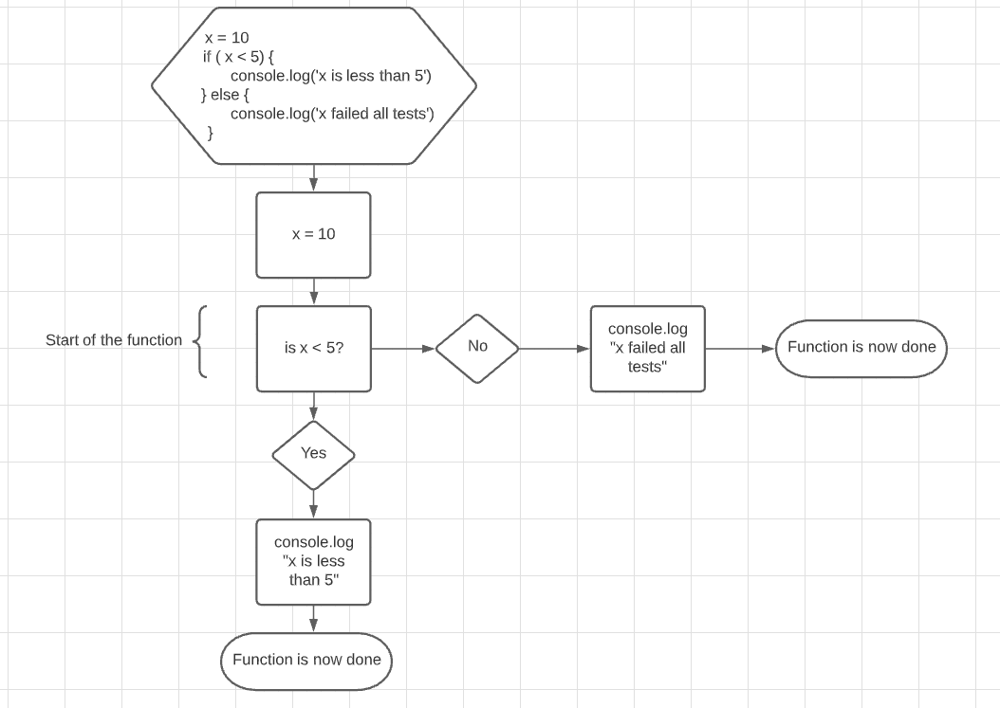
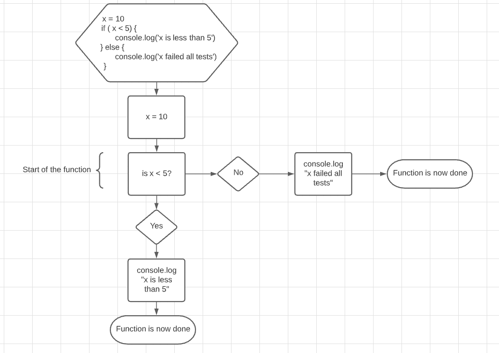

JavaScript Conditionals
When creating functions in JS there are many times that we need to have the ability to turn on or off something. Where we need to say if this is true please do this other wise do this.


When creating functions in JS there are many times that we need to have the ability to turn on or off something. Where we need to say if this is true please do this other wise do this.
